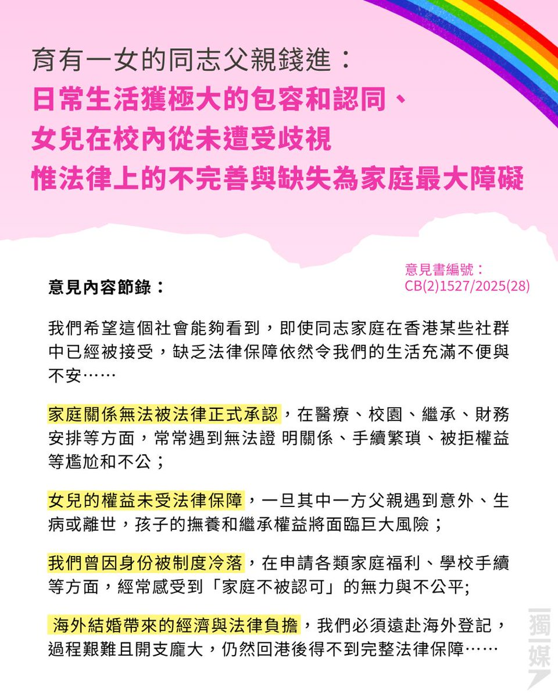
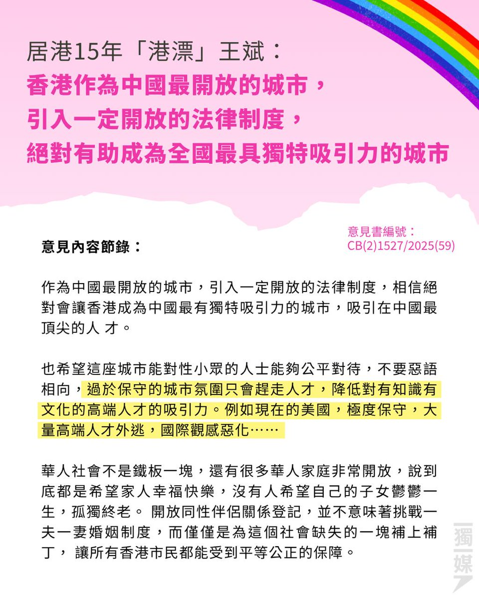
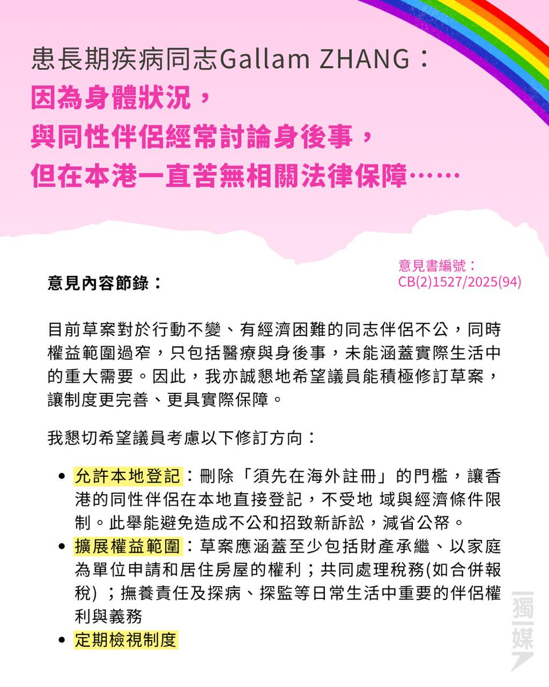

RedFox（2代目）🇲🇴🇭🇰
@FoxRed695449
RT @inmediahk: 同性伴侶登記法案收6,000意見書 支持反對意見參半
https://t.co/D70BMg5Edi



inmediahknet
@inmediahk
同性伴侶登記法案收6,000意見書 支持反對意見參半
https://t.co/D70BMg5Edi https://t.co/CW5aXIwEv7